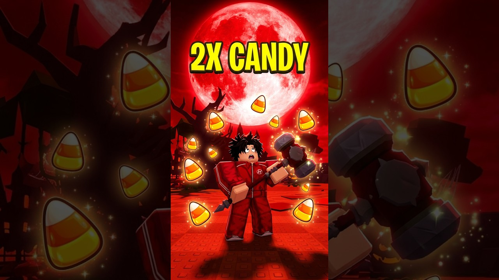

🌕 Blood Moon x2? Am cronometrat

TheRECKLESS are un ghid de 38 de secunde despre Candy Corn în Steal an Egg, cu „2X CANDY” scris mare pe thumbnail, peste o lună roșie. Din thumbnail pare că ideea e simplă: în timpul Blood Moon strângi mai multe bomboane.
Ce știm sigur: bannerul din joc promite x2 în timpul Blood Moon. Ce nu am văzut încă: pe cineva care să fi măsurat dublarea, cu cifre. Așa că o spunem corect: bannerul promite x2, noi testăm.
De ce merge: Halloween-ul e acum în joc, toată lumea farmează Candy Corn, iar un „x2” pe thumbnail atrage click-uri. Un test cu cifre reale răspunde exact la întrebarea pe care și-o pune oricine vede bannerul.
Ideea VEXU: „Blood Moon x2? Am cronometrat.” 60 de secunde de farm normal, apoi 60 de secunde de farm în Blood Moon, același loc, aceeași unealtă. Numărăm Candy Corn la final și punem cele două cifre una lângă alta pe ecran. Fără intro, rezultatul în ultimele 3 secunde, oricare ar fi el.
TikTok, de căutat în aplicație: „steal an egg blood moon candy corn”.
Follow pe TikTok @vexu_online și abonare pe YouTube la VEXU Online. Follow = Au ce bile! 💥